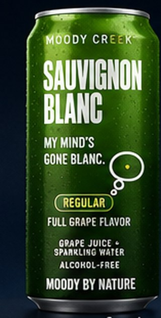
Pre-launch · First drop at green harvest
Moody by Nature.
Fifteen grapes. Two moods. Pressed loud, poured cold, zero caffeine.
Grapes & bubbles. Nothing else.
Caffeine-free
No added sugar. No added anything.
The ingredient list
Most drinks have a paragraph on the back. Ours has a sentence. Wine grapes give you enough flavor, color and acid on their own that you don't need to hand a chemist the rest of the job.
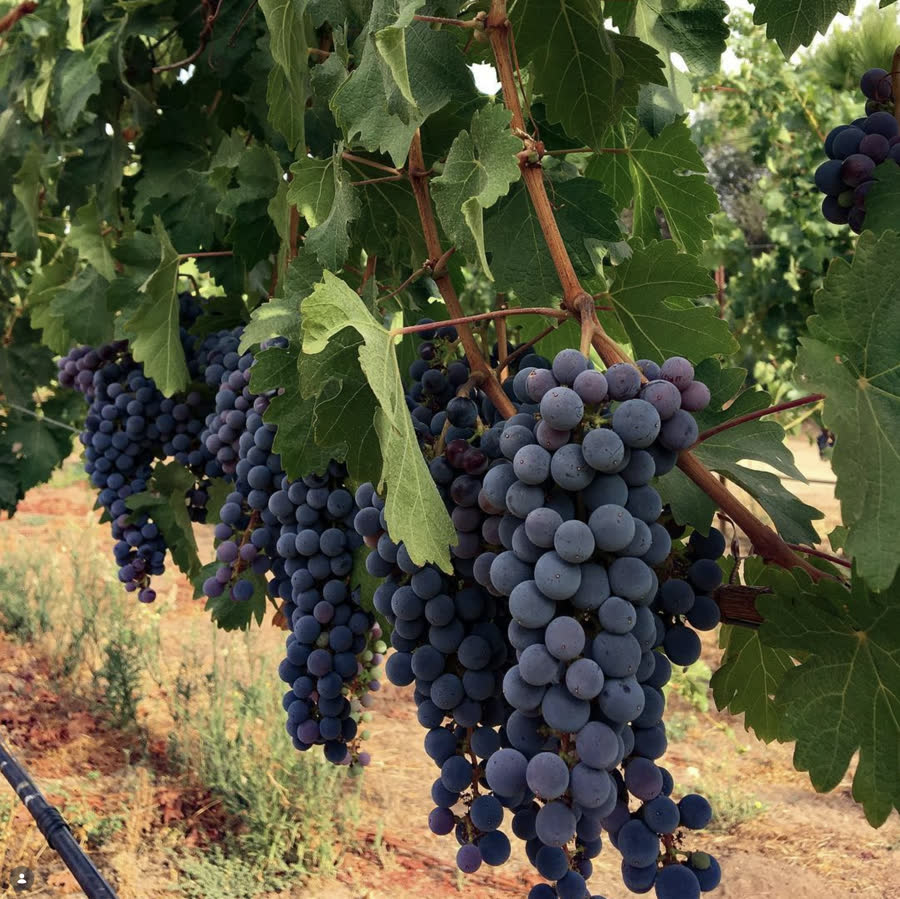
Sugar per 12 oz
Every gram of sugar in a Moody Creek walked in attached to a wine grape. We press whole clusters and cut the juice with bubbles — the whole flavor of the vineyard, at about a third the sugar of the loud cans.
We cut ours with bubbles until it was about a third of a soda — and left the sugar bowl alone.
The lineup · scroll →

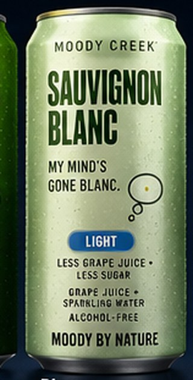
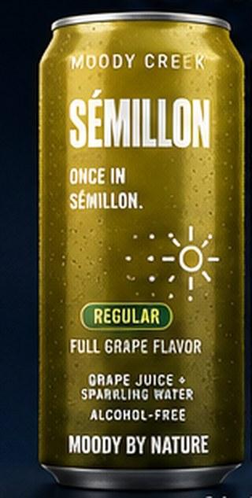
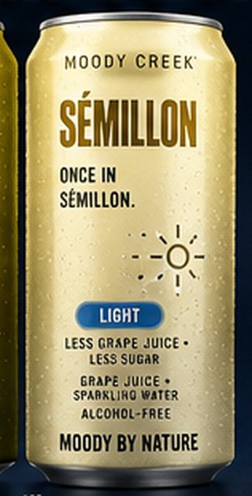
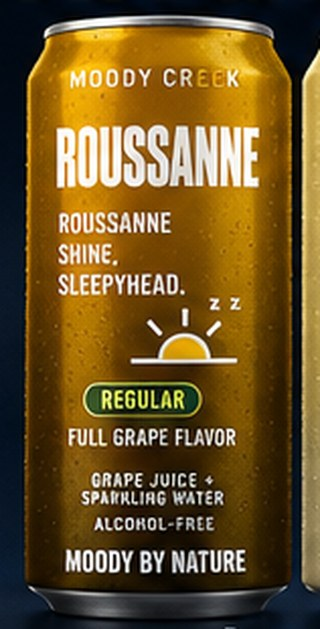
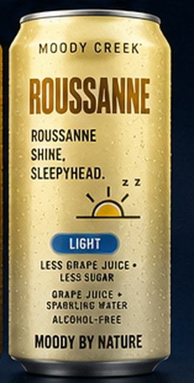
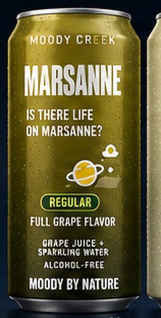
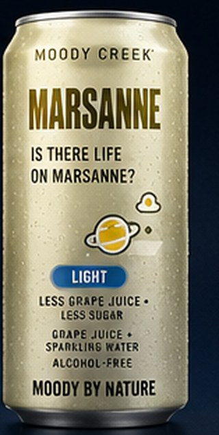
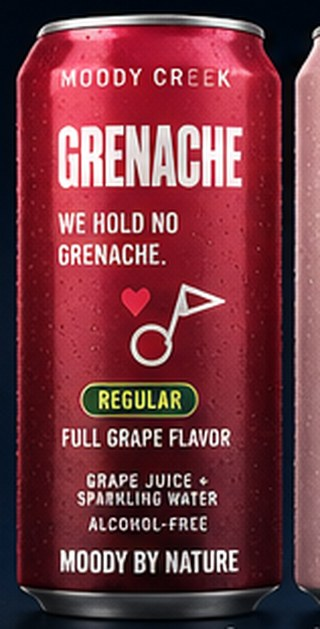
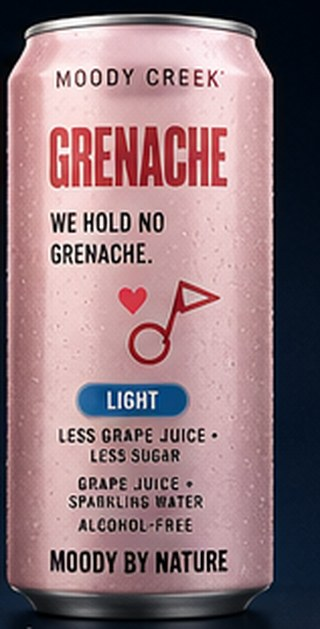
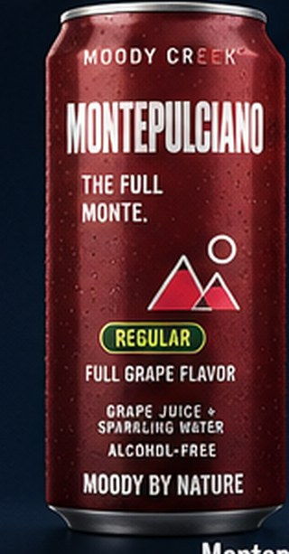
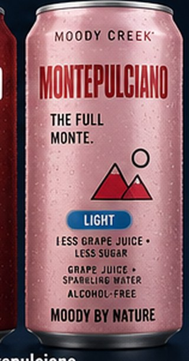
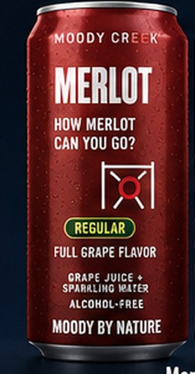
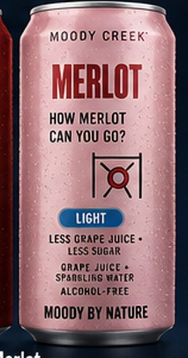
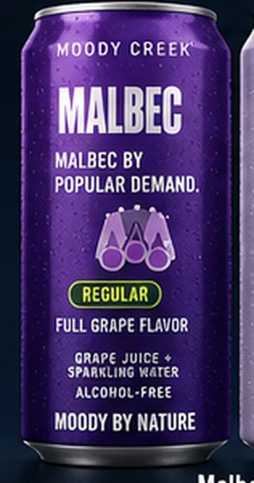
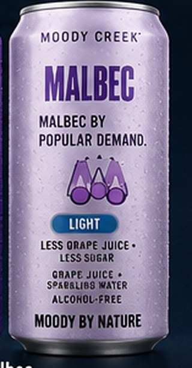
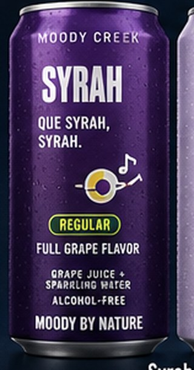
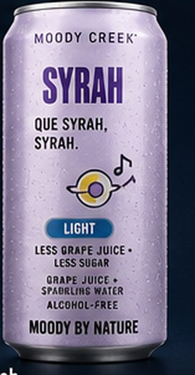
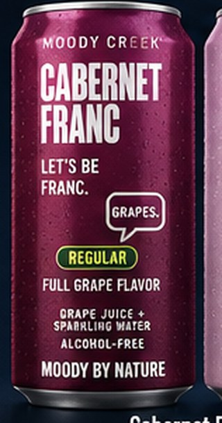
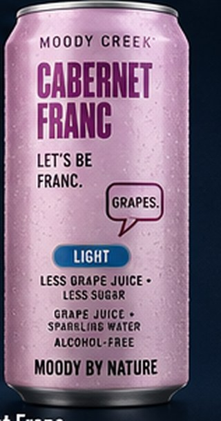
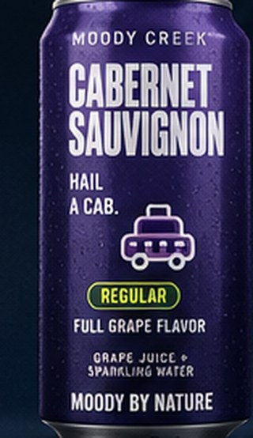
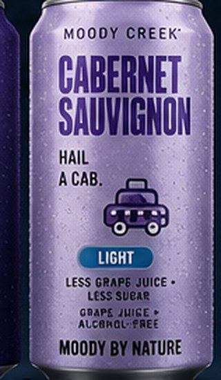
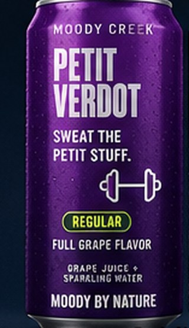
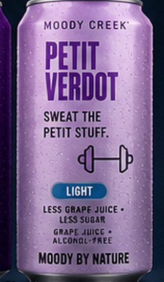
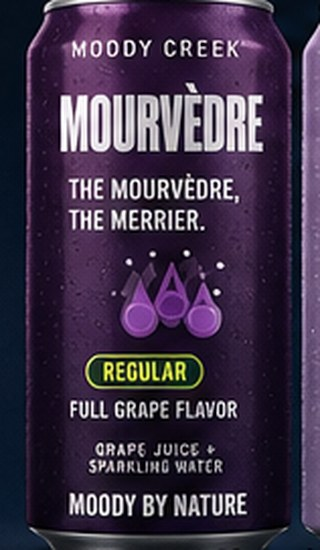
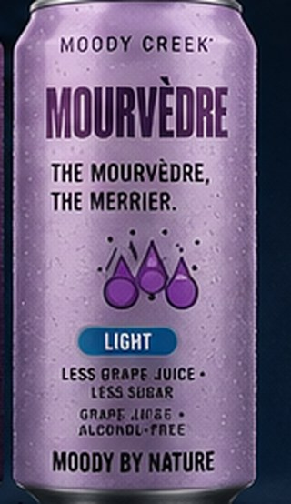
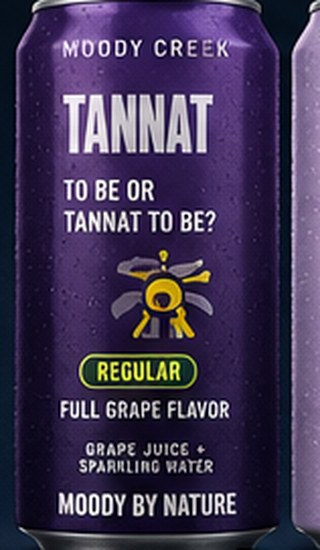
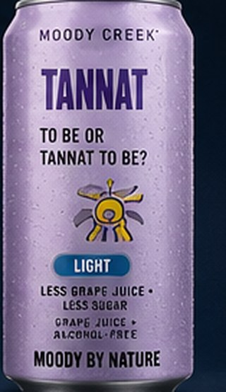
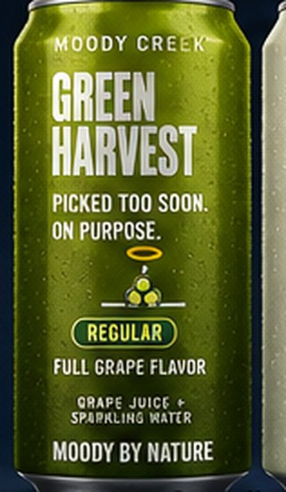
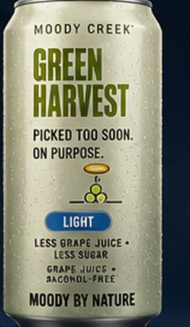
Where this came from
It's called green harvest. Growers cut off a share of the unripe clusters in July so the vines pour everything into what's left. The fruit that gets dropped is small, hard, sour as a lemon — and it lies there.
We asked if we could have it.
Turns out unripe wine grapes are exactly what a drink like this needs: barely any sugar, enormous acid, and all of the variety's character already showing. Blend a little of that into ripe juice and you land somewhere soda can't reach — low sugar and genuinely tart — without opening a single bag of anything.
That's the whole trick. There is no other trick.
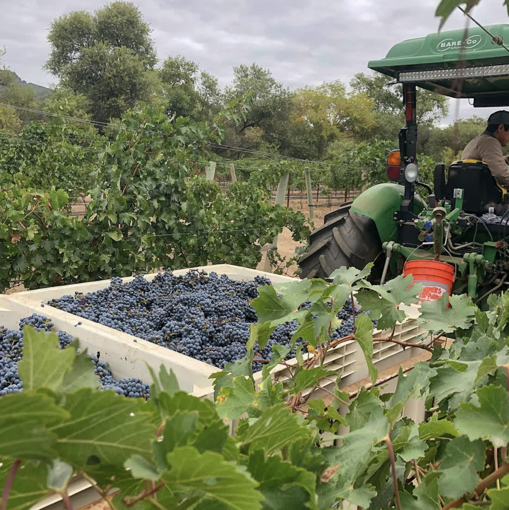
If you're the one buying it
No caffeine
Not a trace, and never. It's grapes. That also means it's allowed in most of the places energy drinks aren't.
No added
anything
Every gram of sugar in the can walked in attached to a grape. The Nutrition Facts panel says so in FDA's own words.
~12g
Per 12 oz can — roughly a third of a cola, with nothing added to get there.
It's like biting into a cold grape that fizzes back.
The first drop
The press runs at green harvest. The first batch will be small, numbered, and gone quickly. Leave an address and we'll tell you when — and nothing else, ever.
Demo form — connect this to your email provider before launch.